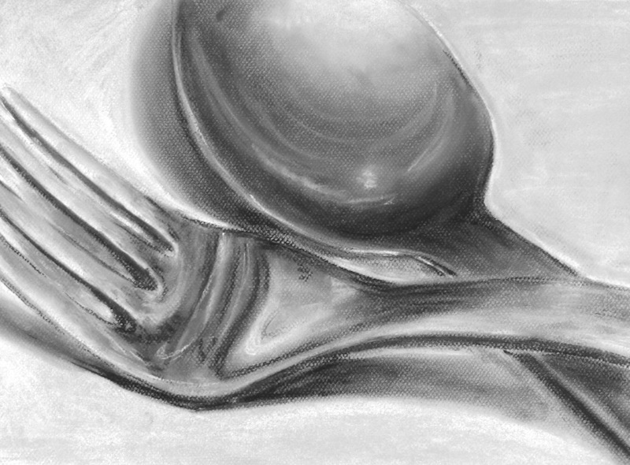
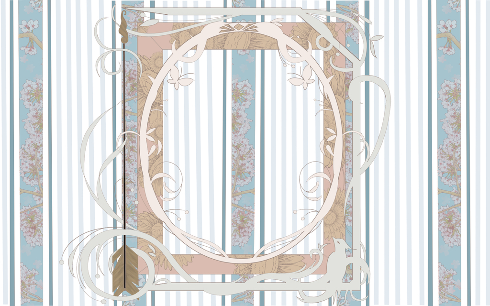
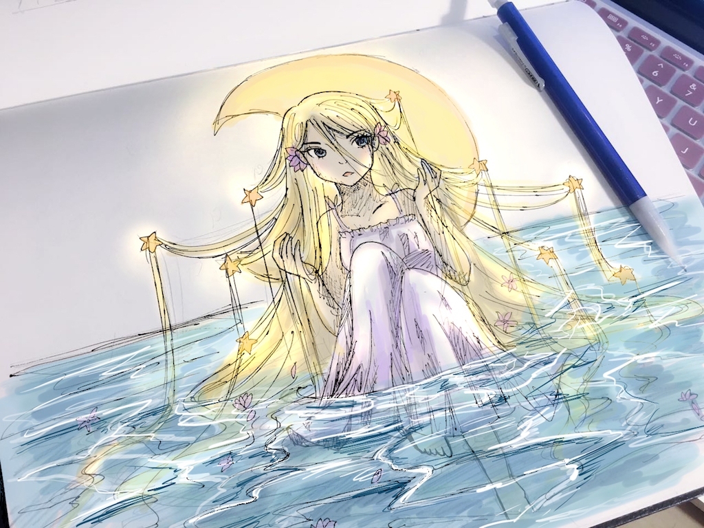
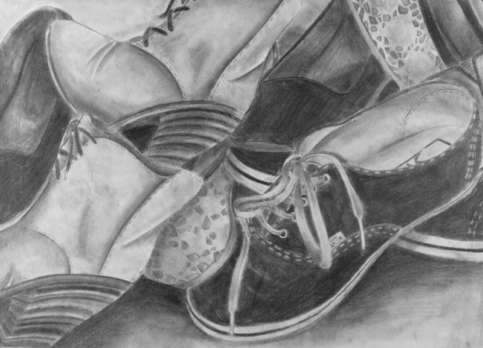

Hobbies
One of my biggest hobbies is art. I like to draw whenever I have time to. When drawing, it helps me to distract myself from my social media, school work, or just basically about everything. I like to use all type of mediums but couplle months ago I started learning how to do digital drawings, and I think now I like digital art better. The reason why I enjoy digital art more is because I get to work on different layers, it is more flexible to use, it provides a lot of effects, I can use the image as my computer's wallpaper, and it does not leave a mess on my workspace.
Drawing Examples
- 
- 
- 
- 